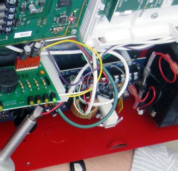
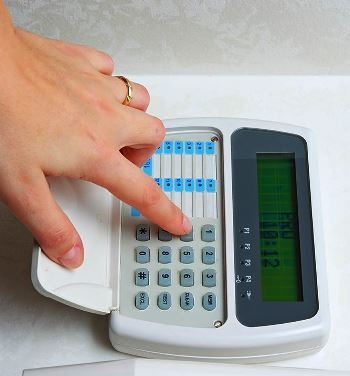
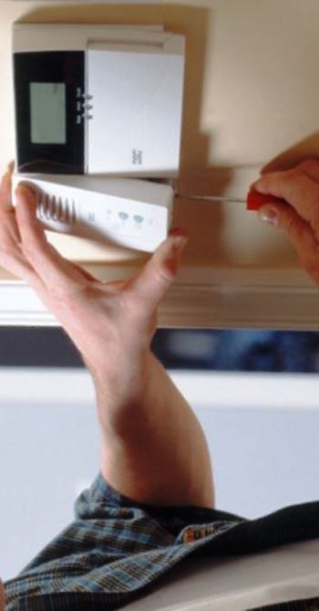

Качественный электромонтаж в Санкт-Петербурге и ленобласти, стаж 12 лет. Частный электрик, недорого и качественно.
Телефон - 8 904 642 08 57. Николай.

Установка охранной сигнализации.
Цены ниже! Позвоните!
Новейшие системы безопасности могут вовремя информировать владельцев объектов о проникновении посторонних в охраняемое пространство. Эта система помогает вести круглосуточный контроль, наблюдение за территорией любого размера. Например, охранно - пожарная сигнализация спасет недвижимость от огня при внезапном возгорании предметов в помещении. Поэтому сегодня так востребована установка охранной сигнализации на дачах, в квартирах, в различных учреждениях. Так надежная сигнализация придаст уверенности, что зимой в дачном доме не объявятся нежелательные гости, что в гараже обеспечена безопасность автомобилю. Причем на всем пространстве можно провести надежную периметровую сигнализацию.
Проектирование охранной сигнализации.
Монтаж системы охраны подразумевает проектирование, прокладку кабеля, монтаж оборудования, его настройку, пуск всей системы. Он проводится в различных типах помещений, исключая лестничные площадки, ванные комнаты, бани. Правильно выполненное мероприятие по монтажу охранной сигнализации гарантирует бесперебойную работу, длительную безаварийную эксплуатацию. Только профессиональный электромонтажник может обеспечить требования ГОСТа. Работа эта довольно сложна, трудоемка. Современные охранные системы - технически сложные устройства.
Несколько лет я произвожу электромонтажные мероприятия: установку охранной сигнализации, датчиков, системы видео наблюдения, охранно-пожарной системы, домофонов, электромагнитных замков. При проектировании подобной системы я стараюсь найти компромисс между потенциалом оборудования, требованиями стандартов, пожеланиями клиента. Обычно проектирование защитной схемы входит в комплекс первичных мероприятий при сооружении объекта. Но можно составить его для готового здания. Могут возникнуть затруднения, так как надо учитывать нормативные требования, чтобы сохранить эффективность безопасности, чтобы избежать конфликтов с инспектирующими органами. Помимо этого, может потребоваться частичное нарушение ремонта, изменение дизайнерского решения.
Сколько стоит установить охранную сигнализацию?
Площадь пола в кв. м. |
До 50 кв. м. |
До 100 кв. м. |
От 100 кв. м. |
Цена за монтаж сигнализаций в рублях. |
От 350 |
300 |
От 260 |
Охранная сигнализация объекта бывает любого типа, в ней используются различные датчики: инфракрасные детекторы, датчики утечки воды, газа, акустические. Можно, конечно, сделать радиоканальную охранную сигнализацию. Эта система функционирует почти с любым датчиком, контрольная панель же действует на приеме радиосигналов от датчиков. Питание поступает от блока с аккумулятором, работающим без перезарядки в течение 3 дней. Безусловно, система довольно удобна для дач, коттеджей.
Процесс монтажа охранной сигнализации.
К каждому этапу работы по установке охранной сигнализации я подхожу ответственно. Перед утверждением проекта выезжаю на объект, детально обследую его. Моя задача - определить потенциальную опасность, вероятность которой велика. Моделирую опасные ситуации, подбираю способы их предотвращения. Опираясь на исследования, я принимаю решение о выборе типа защиты, определяю способ ее реализации. Когда проект готов, завожу оборудование.
Следующий этап - штробление потолка, стен. Устанавливаю кабель и надежно закрываю все в штробу. Затем проверяю работоспособность установленной системы, то есть осуществляется пусконаладочная работа. Последний этап - сдача работы заказчику. Даю сопроводительные разъяснения, рекомендации по функциональности системы.
Проблема охранной сигнализации.
Непосредственно в помещении не всегда имеется автономный пульт охраны. Сотрудники соответствующих агентств, ведомств не успеют отреагировать из-за дальнего расположения дома. Уровень эффективности подобной защиты очень низок. Для изменения ситуации могу предложить несколько путей. Во-первых, есть простой, но довольно затратный прием – пульт охраны находится у нескольких человек. При тревоге они вовремя отреагируют, предотвратив неприятность. Во-вторых, если первый вариант затруднителен для владельца, можно воспользоваться услугами живущих неподалеку людей, поручить соответствующие действия сторожу дачного кооператива. Установка охранной сигнализации почти всегда производится вместе с системой видеонаблюдения. Контролировать большой участок, проверять каждый датчик очень трудно. Камеры наблюдения значительно упрощают задачу. Режим ночного видения повысит надежность системы.




Сколько будут стоить материалы.
Расценки на электропроводку.
Электромонтаж в доме.
Замена электропроводки в двухкомнатной квартире?.
Сколько стоит сделать внутреннюю проводку?.